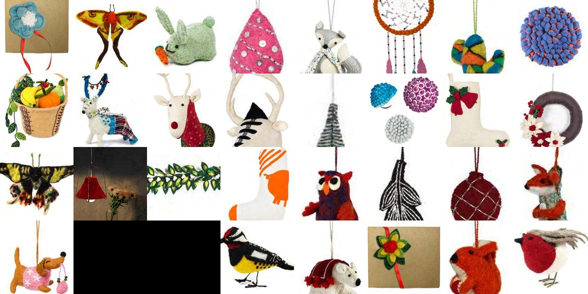

Jaipur, India — Est. 2000
100% wool felt.
Entirely handmade.
Parampara is a 24-year-old export house turning raw wool into Christmas and interior decor, entirely in-house — from felting and dyeing to stitching and shipping. Every piece carries the hand of the woman who made it.
Who We Are
A craft built by hands,
run like an institution.
Founded in November 2000 by Mr. Vishal and Dr. Savita Choudhary, Parampara began with one intent: build an environmentally responsible business that gives women real, dignified income. Today it's a $1.2M export house growing over 10% a year — but the felt is still cut, dyed, and stitched by hand, the same way it always was.
We work with importers across the USA and Europe, specialising in 100% wool felt Christmas ornaments and interior decor, with every stage — from raw wool to final dispatch — managed in our own facilities in Jaipur and Bagru.
Read our full story → Our artisan team, Jaipur
Our artisan team, Jaipur
Where Our Work Has Travelled
The White House
Selected for President Obama's first White House Christmas, for the family's living room.
House of Commons, London
Ongoing supplier of Christmas decorations, alongside leading brands across the UK and Europe.
Vice President of India
Recipient of the 2005 award for innovation in crafts, recognising design and artisanal excellence.
CTPAT · SMETA · Sedex
Independently audited and compliant for security, ethical trade, and social accountability.
The Collection
28 categories. One material.
Endless character.

Sustainability
Every colour is recycled
before it becomes a product.
Our dyeing and production unit at Bagru runs on a 100% zero-liquid-discharge system — every drop of water used to dye our wool is treated and reused. Add 42kW of solar generation and a 1.25 million litre rainwater store, and you get decor that's beautiful without the runoff.
See how it works →Let's Work Together
Sourcing for the next season?
Tell us what you're looking for — custom colourways, private label, or our standard collection — and we'll get back to you with samples and pricing.
Start an Inquiry